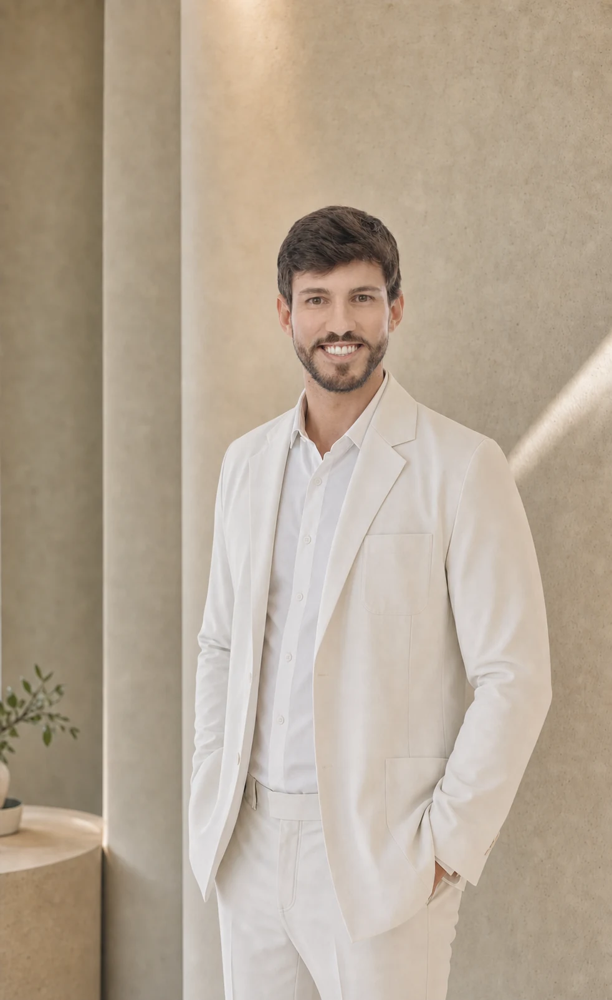

Harmonização completa do sorriso
Reanatomização dos dentes anteriores com foco em equilíbrio, proporção e naturalidade.
Quero transformar meu sorrisoAtendimento em São Paulo • SP
Odontologia estética e cuidados clínicos personalizados para transformar e manter a saúde do seu sorriso.
Casos clínicos
Cada sorriso é planejado de forma individual, respeitando proporções, características pessoais e objetivos de cada paciente.
Reanatomização dos dentes anteriores com foco em equilíbrio, proporção e naturalidade.
Quero transformar meu sorrisoPlanejamento personalizado para melhorar forma, uniformidade e harmonia do sorriso.
Quero transformar meu sorrisoAjuste das proporções dentárias preservando as características individuais do sorriso.
Quero transformar meu sorrisoFacetas planejadas para melhorar formato, cor e integração com o sorriso.
Quero transformar meu sorrisoCada tratamento é individualizado. Os resultados podem variar conforme as características e condições clínicas de cada paciente.
Cuidado sob medida
Opções estéticas, preventivas e restauradoras conduzidas com planejamento individualizado.
Odontologia estética
Planejamento estético personalizado para melhorar formato, proporção, cor e harmonia do sorriso, preservando a naturalidade.
Tratamento para melhorar a cor dos dentes de forma planejada e individualizada.
Reconstrução de dentes com resina composta, buscando recuperar função, anatomia e aparência natural.
Planejamento integrado para casos que necessitam de múltiplas correções estéticas e funcionais.
Manutenção de facetas
Avaliação periódica das facetas, da adaptação, da gengiva, da oclusão e da estabilidade do tratamento.
Procedimento para recuperar brilho, lisura superficial e acabamento das facetas, reduzindo pequenas pigmentações superficiais.
Correções localizadas em casos de pequenas fraturas, desgastes, alteração de textura ou necessidade de ajuste.
Clínica geral e prevenção
Remoção profissional de placa bacteriana, cálculo e pigmentações, associada à orientação de higiene bucal.
Consulta completa para analisar dentes, gengiva, mordida, queixas e necessidades de tratamento.
Consultas periódicas para prevenção, diagnóstico precoce e manutenção da saúde bucal.
Remoção da cárie e restauração do dente, buscando preservar o máximo possível da estrutura dental.
Avaliação e cuidado de inflamações gengivais, sangramento, acúmulo de cálculo e alterações periodontais.
Avaliação da mordida e ajustes quando indicados para melhorar conforto, função e proteção dos dentes e restaurações.
Atendimento de dor, fraturas dentárias, restaurações quebradas, sensibilidade intensa e outras intercorrências.

Sobre o profissional
Odontologia estética com planejamento personalizado e foco em resultados naturais.
Formado pela Universidade Federal de Alfenas (UNIFAL-MG), o Dr. Henrique Valadares atua com dedicação à odontologia estética e à transformação de sorrisos de forma cuidadosa e responsável.
Cada tratamento começa pela escuta e por um planejamento individualizado, respeitando características, expectativas e a beleza natural de cada paciente.
Seu trabalho une técnica, ética e atenção aos detalhes para conduzir resultados harmônicos, precisos e coerentes com a identidade de quem está sendo cuidado.
Relatos reais
“Fiquei encantada com o resultado. Agradeço pelo excelente trabalho, delicadeza e eficiência durante todo o processo.”
“Ficou simplesmente espetacular. Amei o trabalho e o cuidado com os detalhes.”
“Ficou ótimo. Você é um excelente profissional.”
Atendimento em São Paulo
Agende sua avaliação ou consulte a localização do atendimento em São Paulo.
Dr. Henrique Valadares Av. Brigadeiro Luís Antônio, 2909 Jardim Paulista, São Paulo – SP Atendimento sob agendamento.Av. Brigadeiro Luís Antônio, 2909, Jardim Paulista, São Paulo - SP
Consulte a melhor rota até o consultório pelo Google Maps.